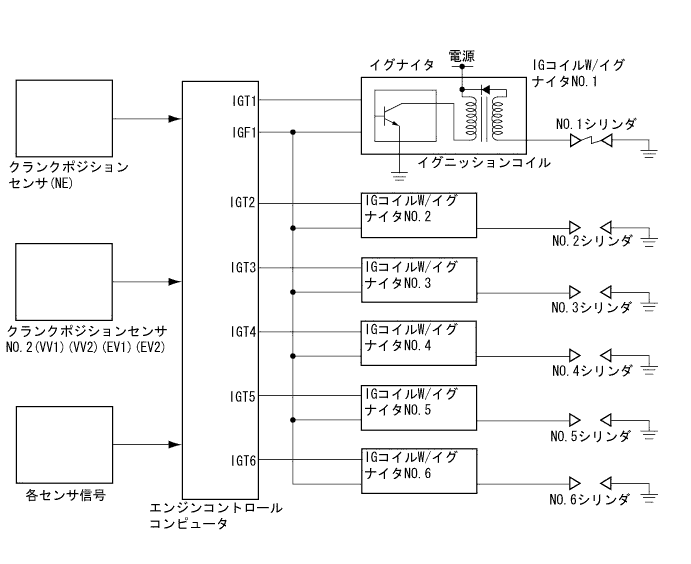
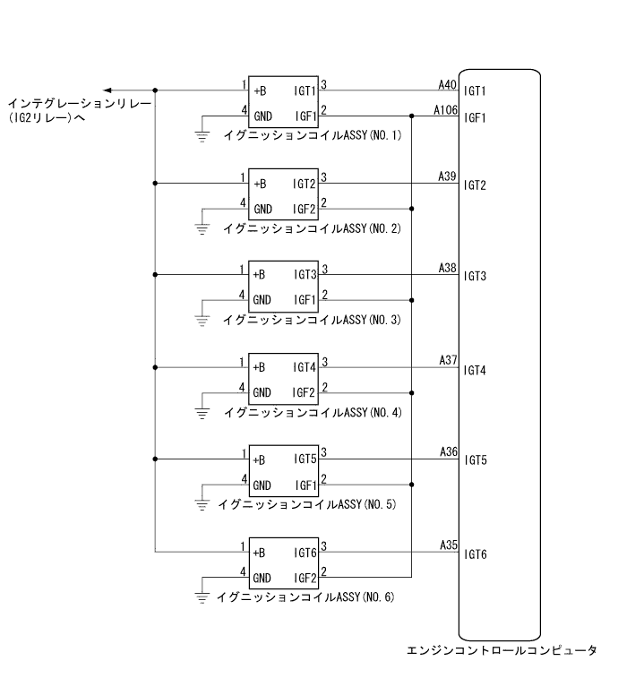
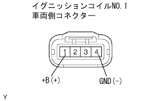
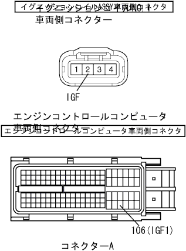
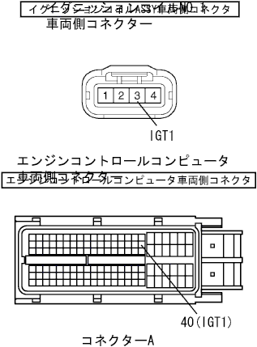
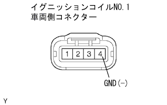
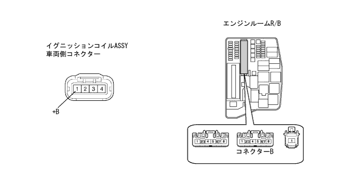

DTC P0351/14 Igniter System 1 |
DTC P0352/15 Igniter System 2 |
DTC P0353/15 Igniter System 3 |
DTC P0354/14 Igniter System 4 |
DTC P0355/14 Igniter System 5 |
DTC P0356/15 Igniter System 6 |

| DTCNo. SAE/TCCS | DTC Detection Condition
| Inspection Area |
|---|---|---|
| P0351/14 P0352/15 P0353/15 P0354/14 P0355/14 P0356/15 |
|
|

| Step 1 | Check DTC Output |
Connect SST (TaSCAN) to DLC3.
Turn the IG ON and check the DTCs following the SST (TaSCAN) screen display.
| Result | Proceed to |
|---|---|
| 1 of P0351/14, P0352/15, P0353/15, P0354/14, P0355/14, P0356/15 is output | A |
| More than one of P0351/14, P0352/15, P0353/15, P0354/14, P0355/14, P0356/15 is output | B |
|
| ||||
| A | |
| Step 2 | Clear DTC |
Turn the IG ON and clear the DTCs following the SST (TaSCAN) screen display. (see)
| NEXT | |
| Step 3 | Perform Operation Check Drive |
Change the position of ignition coil NO.1 (cylinder No.1) and perform a road test.
Turn the IG ON and check the DTCs following the SST (TaSCAN) screen display.
| Result | Proceed to |
|---|---|
| DTC does not change | A |
| A different igniter system DTC is output | B |
)
|
| ||||
| A | |
| Step 4 | Inspect Wire Harness and Connector (Power Source Circuit) |
Reference |
Disconnect the ignition coil NO.1 connector.
Turn IG ON.
Using SST (Toyota electrical tester), measure the voltage between the terminals.
| Tester Connection (Terminal Symbol) | Condition | Standard |
|---|---|---|
| 1(+B) - 4(GND) | IG ON | 11 to 14V |
|
| ||||
| OK | |
| Step 5 | Inspect Wire Harness and Connector (Engine Control Computer - Ignition Coil) |
ReferenceDisconnect connector A of the engine control computer.
 |
Using SST (Toyota electrical tester), measure the resistance between the terminals. (For Terminals of ECU, see)
| Tester Connection (Terminal Symbol) | Condition | Standard |
|---|---|---|
| A106(IGF1) - 2(IGF) | Always | Below 1 Ω |
| Tester Connection (Terminal Symbol) | Condition | Standard |
|---|---|---|
| A106 (IGF1) and 2 (IGF) - Other terminals and body ground | Always | 10k Ω or higher |
|
| ||||
| OK | |
| Step 6 | Inspect Wire Harness and Connector (Engine Control Computer - Ignition Coil) |
Reference |
Using SST (Toyota electrical tester), measure the resistance between the terminals. (For Terminals of ECU, see)
| Tester Connection (Terminal Symbol) | Condition | Standard |
|---|---|---|
| A40(IGT1) - 3(IGT1) | Always | Below 1 Ω |
| Tester Connection (Terminal Symbol) | Condition | Standard |
|---|---|---|
| A40 (IGT1) and 3 (IGT1) - other terminals and body ground | Always | 10k Ω or higher |
|
| ||||
| OK | ||
| ||
| Step 7 | Inspect Wire Harness and Connector (Ignition Coil - Body Ground) |
Reference |
Using SST (Toyota electrical tester), measure the resistance between the terminals.
| Tester Connection (Terminal Symbol) | Condition | Standard |
|---|---|---|
| 4 (GND) - Body ground | Always | Below 1 Ω |
|
| ||||
| OK | |
| Step 8 | Inspect Wire Harness and Connector (Ignition Coil - Integration Relay (IG2 Relay)) |
Reference
Remove the integration relay from the engine room R/B.
Using SST (Toyota electrical tester), measure the resistance between the terminals.
| Tester Connection (Terminal Symbol) | Condition | Standard |
|---|---|---|
| 1(+B) - B4 | Always | Below 1 Ω |
| Tester Connection (Terminal Symbol) | Condition | Standard |
|---|---|---|
| 1 (+B) and B4 - Other terminals and body ground | Always | 10k Ω or higher |
|
| ||||
| OK | ||
| ||